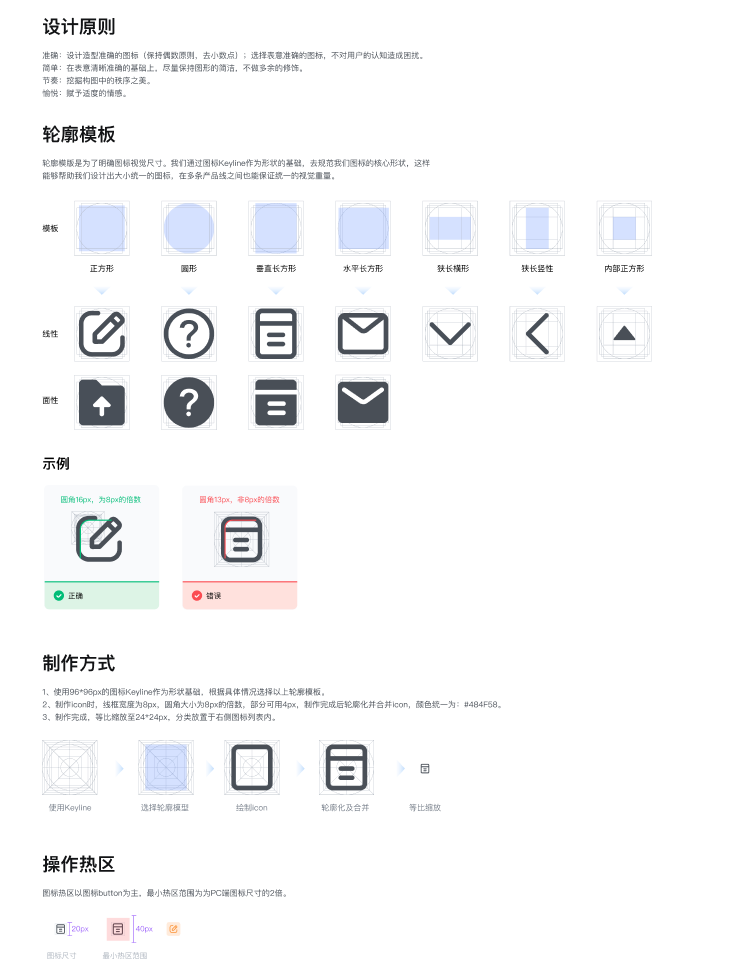

Qing Design System
构建无代码平台设计系统
在我加入轻流之时，轻流并未有完整且系统的设计系统，产品面临着一些界面与功能一致性问题，开发效率也有提升的空间，前端工程师与设计师们在沟通时也存在着一些障碍。团队发起了 Qing Design System 项目，打造轻流自己的设计系统。
作为项目的主要设计师，我负责了 Design Token，部分基础组件以及业务组件的设计。
从设计原则出发
设计系统生长于设计原则之上。设计团队组织了一次 Workshop，进行了想法的发散，收拢与总结。这些原则作为产品设计的指导，渗透到包括设计系统在内的设计工作的方方面面。
在白板工具里的脑暴过程
我们得到这样一版设计原则：
精准
基于角色
轻流产品基于用户角色及工作方式而设计。精准的对标不同角色用户，保证使用同一产品时的不同角色体验均得到满足。
基于场景
产品服务于各色不同的业务场景，精准对标并提炼出不同场景的共性诉求，基于场景的设计让用户的操作仿佛本该如此。
系统
组件化
尽可能用可复用组合的灵活组件满足多样与创新的产品需求。
一致性
以全局的视野，将产品打造成一个和谐的整体。
高效
界面清晰
清晰直观且无歧义的界面表达，保证用户以最小的成本获得准确的信息。
交互流畅
追求简洁直接流畅的操作体验，将操作阻力降至低无可低，用户「想到即做到」。
亲切
可控性
给予用户从始至终的控制感以建立对产品的信任。
情感化
将用户看作自然人而不是冷漠的机器。
打造合理的系统框架
虽然业内已有许多成熟的最佳实践可供参考，但我们依然需要结合我们自身的平台特性做最符合产品实际情况的决策。在参考了大量的成熟设计系统以及理论之后，我们决定以 Token - Component - Pattern - Screen这四个维度来构建我们的设计系统
Design Tokens
Design Token 主要由我维护，它将设计系统中最基础的视觉元素重新梳理归纳进行语义化命名，代替前端代码中的复杂代码，方便设计师和开发人员对设计系统进行统一的管理和扩展，保证产品一致性的同时提升开发效率。
全局样式（部分）
设计师与工程师共同维护一份文档（节选）
Components
QDS 共有 45 个基础组件，这些基础组件是最小单位的交互控件，它们出现在几乎每一个页面中，因此这些基础组件的实现极大提高了设计师与工程师的工作效率。
我们会为每一个组件写上详细的文档，因为无代码产品的灵活特性，即使看似简单的组件，我们也要考虑其中可能蕴含的很多种变化。
Button 组件文档（部分）
Select 组件，包含多种变化
Pattern
我们将频繁出现的场景和需求进行抽象和提炼，设计了可复用的业务组件解决这些问题。这些组件大多由基础组件构成，但比基础组件要复杂得多。
成员选择器设计文档（部分）
Icon
我们制定了 Icon 的绘制规范，保证即使出自不同的设计师之手，Icon 依然有着良好的一致性。此 Icon 库由专人维护，团队中每个设计师都会为该库绘制内容。
Icon 绘制规范
团队已为产品绘制 200 多个图标，这个数字还在增加中。
插画
践行情感化设计的手段有多种，使用插画一定是其中绕不开的一个。我们为产品打造了一套视觉插画。
产品插画（部分）
跨部门的共创
设计系统的落地的一大难点，在于跨部门的团队合作。前端工程师作为重要的利益相关方，我们在项目立项之初便与研发团队深度合作，一同探寻设计系统的方向与落地方式。整个项目团队包含设计，研发与测试。我们会利用每周的会议进行组件设计的讨论，评审，排期与问题沟通等工作。这套系统的落地离不开每一个团队成员的努力。
团队使用的协作表格
提升工作效率的利器
QDS 项目的实际成果得到了非常积极的反馈。作为一个不断演进的项目，它的影响仍在不断扩大的过程之中。团队也在积极想办法收集更多定量的数据来量化设计系统对产研工作的帮助。
如今的 QDS 是团队中每一位小伙伴共同努力的产物。参与到此项目的设计师还有：
@沈玉琴 @刘雯雯 @周凌超 @廖孔晴 @邱亚茹 @刘艺阳 @刘长林 @龚力康
很期待不断进化的 Qing Design System 在未来的样子！